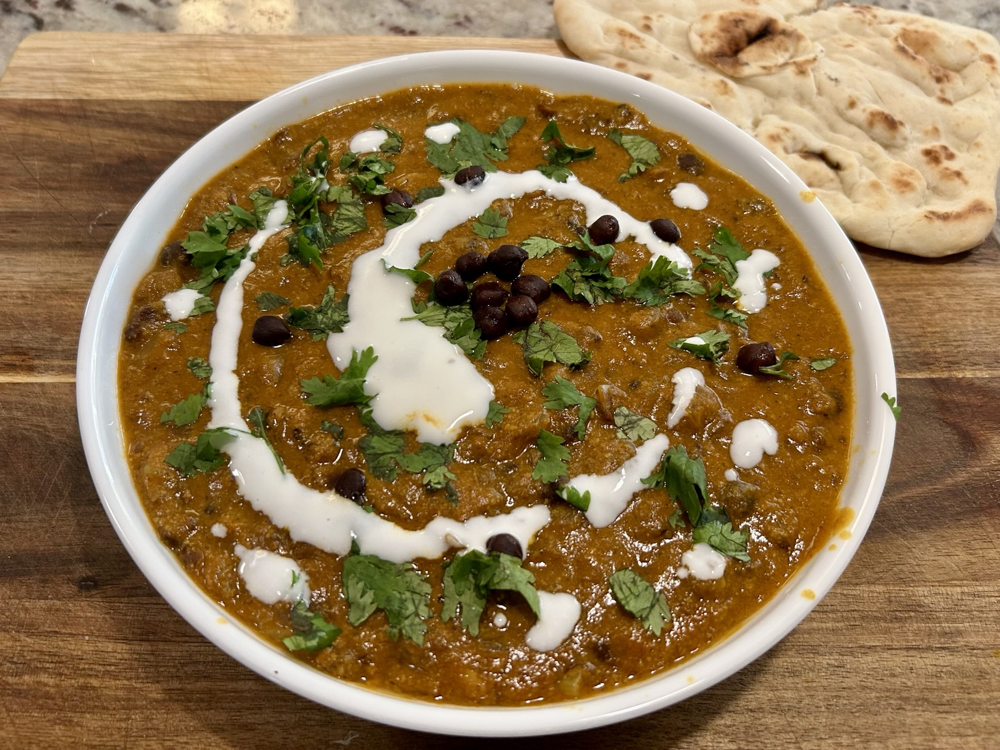
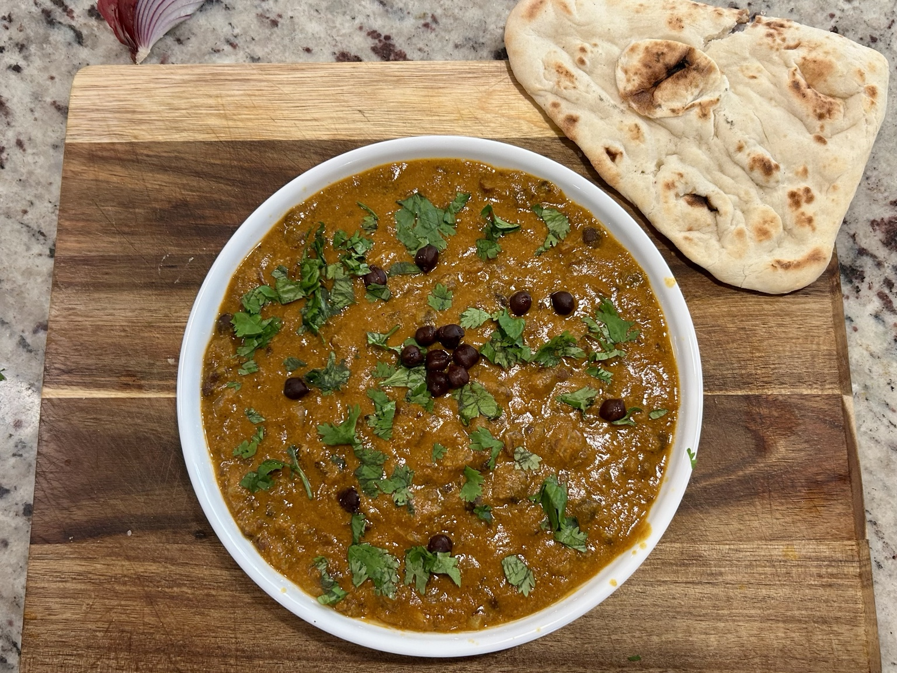
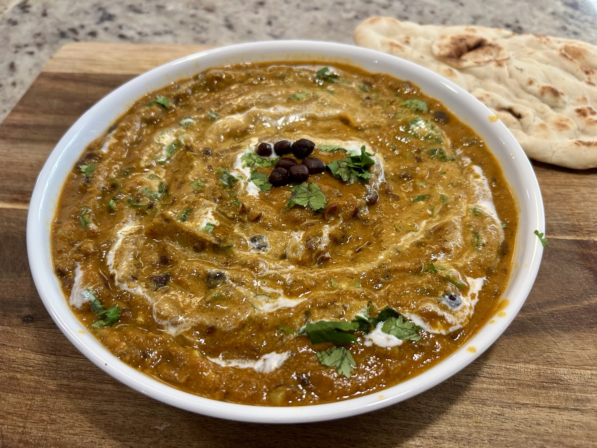

Main
Kala Chana Curry
North Indian-style black chickpea curry with a deep, earthy flavour and a distinct chana masala spice profile.



Ingredients
- 1 cup dried kala chana (black chickpeas), soaked overnight
- 1 medium onion, finely chopped
- 3 garlic cloves, finely chopped
- 1 inch fresh ginger, grated or finely chopped
- 2 medium tomatoes, finely chopped or crushed
- 1 tbsp extra-virgin olive oil or neutral oil
- Salt, to taste
- Fresh cilantro, to finish
- Plain yoghurt, optional, to finish
Chana masala spice blend
- 1 tsp cumin seeds
- 1 tsp ground coriander
- 1 tsp ground cumin
- 1 tsp garam masala
- 1/2 tsp turmeric
- 1/2 tsp Kashmiri chilli powder or mild red chilli powder
- 1/2 tsp amchur (dry mango powder)
- 1/2 tsp crushed kasuri methi
- 1 tsp methi powder
- 1/4 tsp black pepper
Method
- Drain the soaked kala chana and cook in fresh water until fully tender. Reserve some of the cooking liquid.
- Heat the oil in a wide pan. Add the cumin seeds and let them sizzle briefly.
- Add the onion and cook over medium heat until soft and well browned.
- Add the garlic and ginger and cook for another minute.
- Add the ground coriander, ground cumin, turmeric, chilli powder, black pepper, and amchur. Stir for about 30 seconds, just until fragrant.
- Add the tomatoes and a little salt. Cook until the tomatoes break down into a thick masala and the raw tomato smell is gone.
- Add the cooked kala chana with enough reserved cooking liquid to make a loose curry. Simmer for 15–20 minutes.
- Stir in the garam masala and crushed kasuri methi at the end. Adjust salt and consistency as needed.
Serving
Finish with fresh cilantro and, if you like, a little plain yoghurt. Serve with naan, roti, rice, or any flatbread that can catch the thick sauce.
Notes
Kala chana have a firmer texture and a deeper, earthier flavour than ordinary chickpeas. The characteristic North Indian profile here comes from cumin, coriander, amchur, garam masala, and kasuri methi: warm, aromatic, slightly tangy, and unmistakably chana-masala-like.